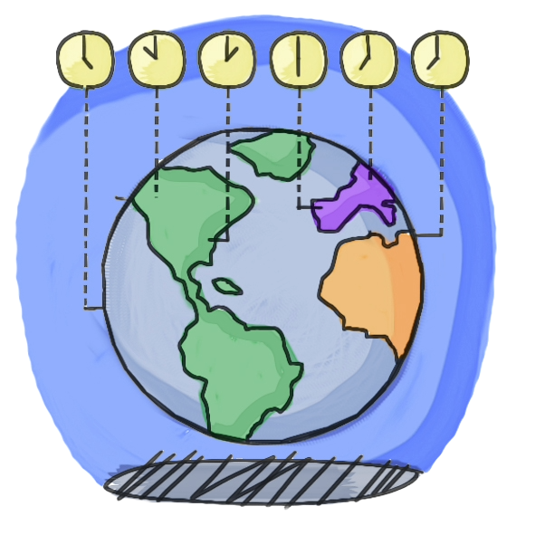

Ex 4 - Sabendo que o fuso horário da França em relação ao Brasil é de + 5 horas
(no horário de verão na França), elaborar um programa que leia a hora no
Brasil e informe a hora na França.
<!DOCTYPE html>
<html lang="pt-br">

<head>
    <meta charset="UTF-8">
    <meta name="viewport" content="width=device-width, initial-scale=1.0">
    <title>Ex3_4</title>
    <link rel="stylesheet" href="styles/styles.css">
</head>

<body>
    <section class="menu">
        <h1>-- Programa: Hora na França --</h1>
        <div>
            
            <p>Hora Brasil:
                <input type="text" id="inHoraBrasil" placeholder="Informe o horário brasileiro" class="texto">
            </p>
            <p>
                <input type="button" id="btCalcular" value="Calcular Horário" class="botao">
            </p>
            <h3 id="outHoraFranca"></h3>
        </div>
    </section>
</body>
<script src="js/Ex3_4.js"></script>

</html>